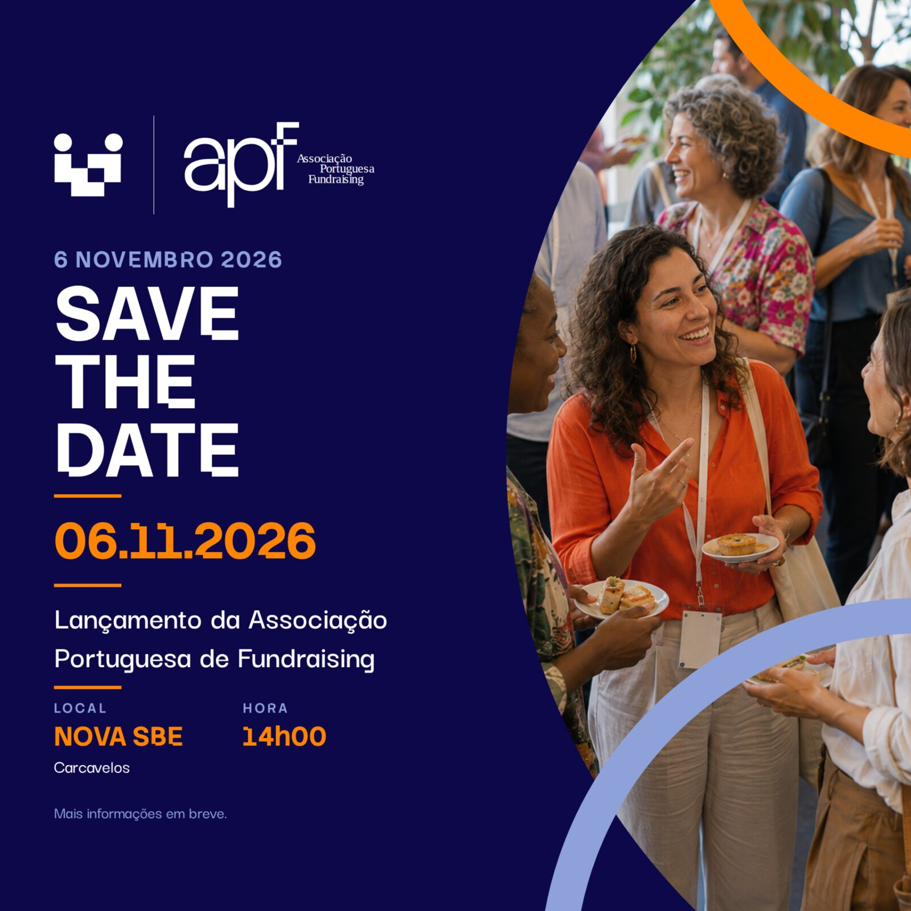

A Associação Portuguesa de Fundraising (APF) prepara o seu lançamento oficial, que terá lugar no próximo dia 6 de novembro de 2026, na NOVA School of Business & Economics, no Auditório Haddad, em Carcavelos.
A partir das 14h00, profissionais, organizações, empresas e outros parceiros ligados ao fundraising estão convidados a juntar-se a nós para celebrar o nascimento de uma nova Associação dedicada ao desenvolvimento e à valorização do fundraising em Portugal.
A APF nasce com o objetivo de promover e profissionalizar o fundraising em Portugal, contribuindo para o fortalecimento das organizações e para o reconhecimento de uma área cada vez mais importante na sustentabilidade e no impacto do setor social.
Este evento será um momento importante para apresentar oficialmente a Associação, dar a conhecer a sua missão e os seus objetivos e começar a reunir a comunidade de profissionais e organizações que trabalham na área do fundraising em Portugal.
Será também uma oportunidade para conhecer outras pessoas que partilham este compromisso, trocar experiências e começar a construir novas relações e oportunidades de colaboração.
As inscrições já estão abertas.
Se trabalha em fundraising, numa organização do setor social, numa empresa ou noutra área relacionada, ou se simplesmente tem interesse em conhecer melhor esta área e fazer parte desta comunidade, junte-se a nós no dia 6 de novembro.
Inscreva-se no eventoComo chegar à NOVA SBE
Para quem vem do centro de Lisboa, uma das formas mais simples de chegar à NOVA SBE é através de transporte público.
A partir do Cais do Sodré, pode apanhar o comboio da Linha de Cascais, no sentido Cascais, e sair na estação de Carcavelos.
Na estação de Carcavelos, pode apanhar o autocarro M16, que faz a ligação direta entre a estação e o campus da NOVA SBE. A viagem de autocarro demora cerca de 10 minutos.
Também é possível fazer o percurso entre a estação de Carcavelos e o campus a pé, num trajeto de aproximadamente 22 minutos.
Para quem se deslocar de carro, a NOVA SBE dispõe de estacionamento no campus.
Esperamos por si neste primeiro grande momento da Associação Portuguesa de Fundraising.